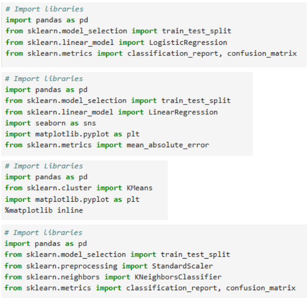
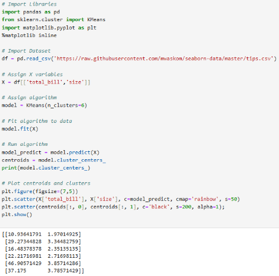
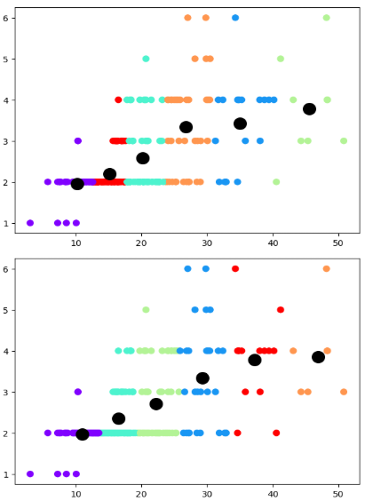
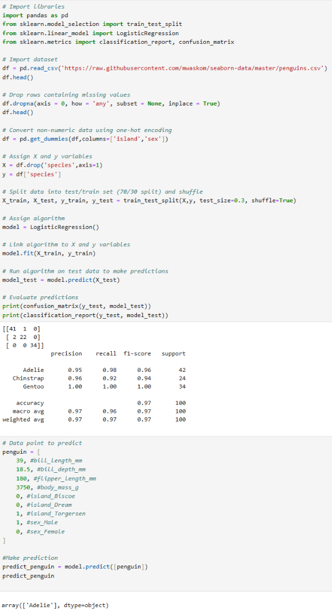
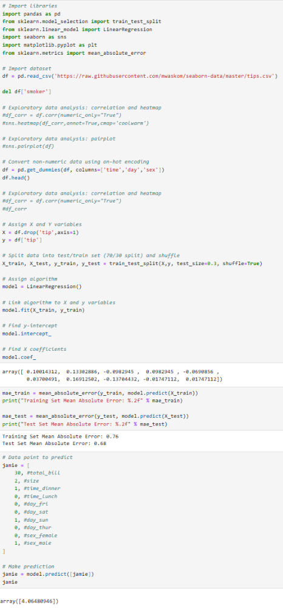

This course explores the intersection of Artificial Intelligence and Data Science, focusing on how computers identify patterns and generate predictions. The curriculum emphasizes Python-based algorithms, model interpretation, and high-efficiency workflows within Jupyter environments.
Key stages of machine learning, such as data collection, feature selection, training, and testing.
Explored various learning types, including classification, clustering, and decision-making through reinforcement.
Leveraging relevant data science libraries to build, refine, and execute predictive models.

Applied an unsupervised machine learning algorithm called k-Means Clustering to partition data into clusters based on patterns.


Implemented Logistic Regression to predict class probabilities, determining the likelihood of an instance belonging to a specific category.

Applied Linear Regression to build a predictive model that estimates the tip amount a customer will leeave at a restaurant.

← Return to Academics